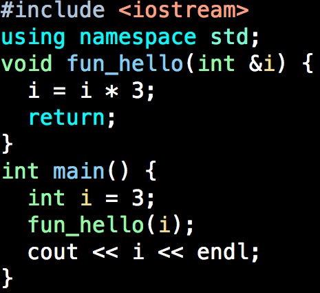
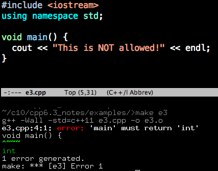
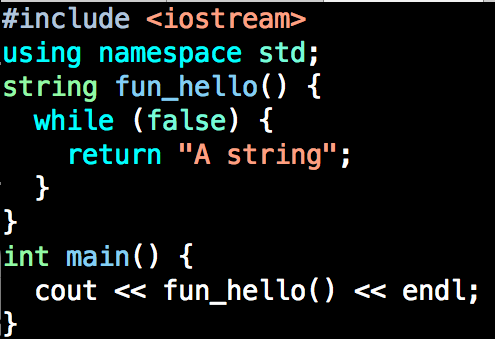
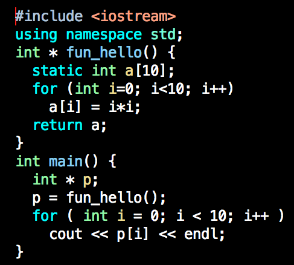
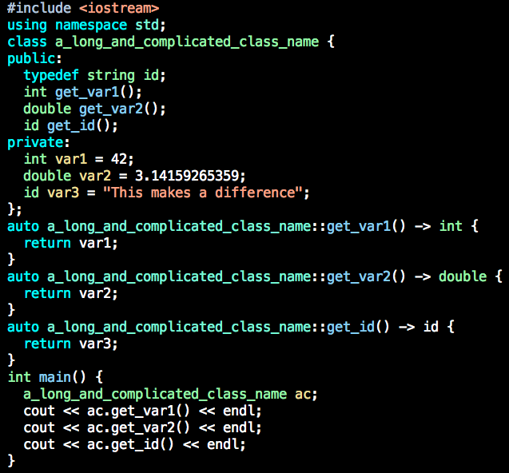

(1) Important: the DATA TYPE of the returned value MUST(?) be specified
at the begining of the function!

(2) How about return NOTHING?
A special type VOID can be used.

(3) You should NOT use void type for main function.

(4) Where to put the return statement?
Anywhere. But be aware what you are doing.

(5) Return a reference or a pointer?
It can be done, but not encouraged nowadays. If you cannot prove
returning a pointer/reference is faster than returning a value, then
return a value.

`auto` can figure out what the data type should be automatically.
(6) There are always something NEW!
In C++11, we can put the DATA TYPE of the returned value at the end
of function declaration. This is called `Trailing Return Type`,
which saves a little bit coding, but makes your function looks clean
and neat when working with objective projects.